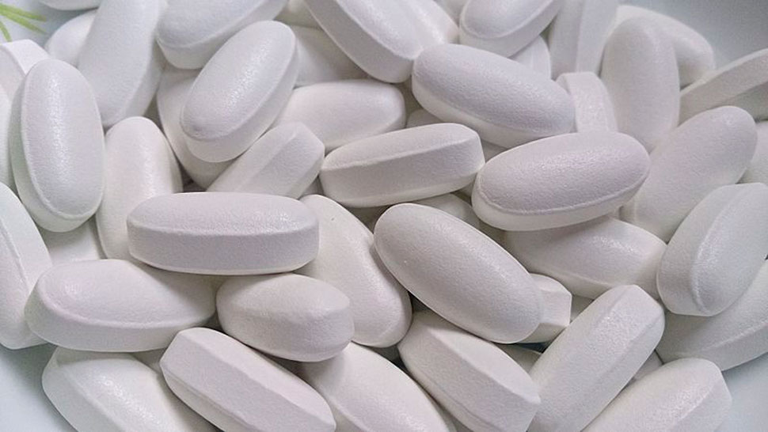

Болният човек се отличава от здравия само по знанията - експертно мнение за лечение на диабет
Доживотният статус на диабета е често срещано и тъжно погрешно убеждение. Това твърди Ричард Тайлър, един от водещите ендокринолози в САЩ с повече от 30-годишен опит. Към него се обръщат пациенти от цял свят, както американци и канадци, така и европейци, включително и различни знаменитости. Автор е на 9 монографии, 37 статии и множество публикации в научни списания.

Д-р Тайлър подчертава, че преобладаващата част от случаите на диабет тип 2 могат да бъдат лекувани с помощта на съвременни лекарства.
- Проблеми на ендокринологията;
- Защо не можете да се лекувате с метформин;
- Съвременни методи за лечение на диабет.
Здравейте! Много сме ви благодарни, че се съгласихте да ни дадете интервю. Това е много рядко срещано при лекари, известни колкото Вас.
Смятам, че сте се захванали с изключително добра кауза. Похвално е това, че искате да разкажете истината на хората. Затова ще се радвам да отговоря на въпросите ви.
Добре. (смее се) Чували сме за твърдата Ви позиция по отношение на диабета. Въпреки общественото мнение Вие твърдите, че диабет тип 2 е лечим?
Точно така. Аз категорично твърдя, че диабетът може и трябва да се лекува.
За съжаление повечето пациенти разчитат на лекарства, които са научно остарели. Хората смятат, че тези лекарства са изпитани, но в действителност този подход съкращава живота им.
Значи сте против конвенционалната терапия?
Не. мисля, че е време да оставим в миналото лекарствата, които са се използвали преди 100 години. Те не са по-ефективни или полезни от пиявиците и кръвопускането. А понякога са дори опасни.
На първо място, имам предвид лекарства на основата на метформин. Съществува множество такива препарати: Багомет, Гликонон, Новамет, Глюкофаж... Мога да продължа да изброявам още и още, има общо около 20 разпространени варианта. Така че всички тези хапчета са не само безполезни, но и вредни за организма.

Те стимулират прекомерното производство на инсулин. Да не забравяме и високата концентрация на глюкоза. Излишъкът прави кръвта по-вискозна, като карамел.
- Състоянието на кръвоносните съдове се влошава моментално: забавеният кръвен поток не позволява почистването на стените, в крайна сметка холестеролът се натрупва и образува плаки. Появява се хипертония, която е чест спътник на диабета.
- Черният дроб и бъбреците не могат да се справят с толкова много хормони (напомням, че инсулинът е хормон), тъканите им се износват и се развиват други заболявания.
- Хормоналният срив предизвиква развитието на атипични клетки и така се появяват тумори. И вече говорим за друга ужасна болест - рака.
Подобно е на претоварване на електрически уред, при което цялата система излиза от строя вследствие на верижна реакция. Рискът от различни патологии става критичен.
И до какво точно води това лечение?
Последиците от употребата на метформин са плачевни:
- Храносмилателни разстройства
Заболявания като диария и язва на стомаха. Като се имат предвид проблемите с въглехидратния обмен при диабетиците, това е наистина опасно.
- Хипертония
Внезапните скокове на кръвното налягане сериозно влошават качеството на живот на пациентите. Появява се главоболие, шум в ушите и пристъпи на паника.
. - Цироза
Здравите чернодробни клетки се заместват от съединителна тъкан. В резултат на това токсините не се извеждат от организма, а се разпространяват в тялото благодарение на кръвта, което води до отравяне на органите.
. - Камъни в бъбреците
Диабетиците са постоянно изложени на риск от развитие на нефропатия, бъбречна недостатъчност. Уролитиазата може да влоши положението.
. - Аневризма
Влошеното състояние на кръвоносните съдове води до спонтанен кръвоизлив с фатален изход.
Възникването на усложнения е трудно да се предвиди, тъй като зависи от редица фактори: продължителност на лечението, приемани лекарства, наследствено предразположение, начин на живот и др. Въпреки това процентът на пациентите, които се сблъскват с последиците от употребата на метформин, е изключително висок. По мои лични наблюдения говорим за около 90%.
Ако метформинът е толкова опасен, защо лекарите го предписват?
Разбирате ли, повечето лекари преписват влошаването на здравето на пациентите си на диабета. Метформинът има краткотраен ефект, като увеличава количеството на инсулина, което спомага за намаляване на нивата на глюкозата, но с течение на времето дозата трябва да се увеличава. Колкото по-дълъг е курсът на лечение, толкова повече метформин е необходим и толкова повече инсулин попада в кръвта.
Главоболието, умората, проблемите с бъбреците са типични за диабетиците, така че е много лесно вината да бъде прехвърлена върху болестта. И, разбира се, лекарите ще кажат Пийте още метформин
Това е един порочен кръг.
Нека не забравяме и финансовата мотивация. Производството на лекарства на основата на метформин е икономично. Често фармацевтите се договарят с лекарите, за да бъдат препоръчвани точно определени лекарства. Така всички печелят, с изключение на пациентите, разбира се.
Описанието ви ми напомня на...
Да, аз самият често сe замислям, как всичко това може да бъде оприличено като наркотична зависимост. Поддържайки илюзията, че диабетът е вечен, пациентите развиват все по-голяма нужда от приема на метформин.
Така че първото нещо, което трябва да направите, е да се отървете от предразсъдъците.
Добре, тогава как трябва да лекуваме диабета? Да търсим други лекарства, които стимулират производството на инсулин?
Не. Диабетът е сложно заболяване, което засяга целия човешки организъм. Не можете просто да принудите организма си да произвежда повече инсулин: това не решава проблема, а създава нови. Метформинът е отлично доказателство за това.
За да излекувате диабета, се нуждаете от комплексни лекарства, които не само поддържат нивата на инсулина, но и повишават чувствителността на клетките към него, укрепват целия организъм и се борят с усложненията.
Аз се спрях на . Той е изцяло натурален, за разлика от лекарствата на основата на метформин - изкуствено изолирано химическо съединение. Това означава, че той не предизвиква странични ефекти. Освен това съдържа 28 билкови екстракта, внимателно подбрани така, че компонентите да допълват взаимно действието си.
Много малко са лекарствата, които могат спокойно и без никакви опасения да се предписват при случаи на диабет, но се оказа универсално средство. Препоръчвам го на всички мои пациенти.
Дори на някои известни личности?
Да, дори на тях (смее се).
 Цитираме откъс от интервю с Том Ханкс,
актьор и режисьор, пациент на д-р Тайлър.
Цитираме откъс от интервю с Том Ханкс,
актьор и режисьор, пациент на д-р Тайлър.
Когато бях млад, се отнасях безразсъдно към здравето си и изобщо не се замислях за рисковете от неправилното хранене. А професията ми изискваше от мен да се нагодя към предстоящите роли: за една от тях трябваше да напълнея, а за друга - да отслабна два пъти повече. Нищо чудно, че на 36-годишна възраст вече имах висока кръвна захар.
През 2013 г. бях диагностициран с диабет тип 2. Тогава разбрах колко сериозно е всичко това. Лекарят ми каза, че ще се оправя, само ако възвърна килограмите си от гимназията. А тогава тежах 44 килограма - мисля, че разбирате, че това е просто невъзможно.
Пред хората се шегувах, казвах, че не е голям проблем. Но трябва да призная, че заключението на ендокринолозите ме изплаши. Промених начина си на живот, започнах да спазвам диета, да следвам режим и дори да тренирам. Но състоянието ми се влоши въпреки всичките ми усилия. Един след друг лекарите заявяваха, че не могат да направят нищо повече, за да ми помогнат. Тогава се обърнах към д-р Тайлър.
Той изобщо не се изненада, когато чу, че се лекувам с метформин. И просто ми предписа ново лекарство. А именно . Само след една седмица забелязах разликата. А след края на курса на лечение, забравих за всички симптоми. Само да уточня, че вече спрях приема, тъй като вече не е необходим.
Разбира се, все още се старая да се храня правилно, да се движа повече и да спортувам, но сега поне мога да си позволя някоя друга обилна вечеря. Вече не се страхувам от диабета и неговите последствия. Всичко това благодарение на това средство и, разбира се, на лекаря, който ми го предписа.
И колко време отнема лечението?
Ако трябва да бъда честен с вас, всичко зависи от ситуацията. Не трябва да разчитате на незабавно лечение, тъй като препаратът има за цел да възстанови и укрепи целия организъм. Процесът е дълъг и отнема доста време, може да отнеме няколко месеца.
Но след края на курса на лечение вече няма да имате нужда от каквито и да било лекарства. Здравето ви ще се възстанови напълно и кръвната захар вече няма да ви притеснява.
Възстановяването протича на етапи.
- Прочистват се кръвоносните съдове
Благодарение на Гинко билобата стените на кръвоносните съдове по-еластични и гъвкави, което им позволява да се прочистват от холестерол и кръвни съсиреци. Впоследствие фините капиляри се укрепват и се подобрява снабдяването на органите с кислород и хранителни вещества.
- Понижават нивата на кръвната захар
Механизмът, по който действа медикаментът, е от изключително важно значение. Концентрацията на глюкоза се намалява не чрез неконтролирано производство на инсулин от панкреаса, а чрез намаляване на инсулиновата резистентност.
По аналогия, вместо да крещим по-силно, подобряваме слуха си, а в нашия случай - способността на клетките да усвояват инсулина.
- Топят се излишните килограми
Затлъстяването увеличава риска от усложнения при диабетиците, влошава състоянието на сърдечносъдовата система и натоварва другите органи. В същото време високите нива на захар затрудняват отслабването: диабетът обостря чувството на глад.
Съставът на включва канела. В допълнение към хипогликемичния си ефект той има способността да ускорява метаболизма и да насърчава преработката на мастните натрупвания в тялото. Служи като естествена горелка за мазнини.
- Възстановява се либидото
Сексуалната дисфункция не е рядкост сред диабетиците. обаче е отговорът на този проблем: той нормализира хормоналния баланс и подобрява производството на тестостерон. Доколкото ми е известно, дори мъже над 60 години са посочили този ефект в клиничните изпитвания.
- Пречиства се организмът
Натуралната детоксикация премахва всички излишни вещества от организма и тялото си набавя необходимите ресурси, за да възобнови тъканите си. В резултат на това много органи, които са увредени от болестта, се възстановяват, а имунната система се подсилва.
Това, разбира се, звучи чудесно. Но честно казано, бих искал да разбера как точно работи всичко.
Добре, ще се опитам да говоря на по-разбираем език. Предполагам сте чували за ефекта на пеперудата. действа по същият начин, предизвиквайки верижна реакция.
От проведените проучвания с пациентите си съставих следната картина на лечение:
- Чувството на умора намалява
След една седмица сънливостта изчезва, а чувството за постоянна умора изчезва напълно. Лекото събуждане и сутрешната бодрост стават приятен старт на деня и с течение на времето се превръщат в нещо привично.
- Настроението се подобрява
След един месец пациентите определят състоянието си като доста добро. Без усещането за жажда, непрекъснатото чувство на глад и честия порив за уриниране мнозина се чувстват значително по-спокойни.
- Любимите храни вече не са причина за безпокойство
След пълния курс на лечение можете да си позволявате храни, които преди сте избягвали да консумирате поради опасения за нивата на кръвната захар..
- Водният баланс е възстановен
Оттоците вече няма да ви притесняват. Петминутното пътуване до магазина вече няма да е проблем и ще имате възможността да преоткриете радостта от продължителните разходки.
- Подобрява се концентрацията
Възстановяването на въглехидратния обмен подпомага стабилното подхранване на мозъка, което оказва положително въздействие върху паметта и способността за концентрация.
- Подобрява се зрението
Укрепването на кръвоносните съдове и капилярите в крайна сметка се отразява и на състоянието на очите. В резултат на това се възвръща яснотата и значително се подобрява зрението.

Като цяло е като машина на времето, която значително подобрява качеството на живот на много пациенти.
Това е наистина страхотно. Можете ли да ни кажете дали това средство може да бъде закупено извън САЩ? Имам предвид в ЕС.
Не съм сигурен дали това средство се доставя в аптеките в Европа. Най-вероятно не. Но знам, че на територията на ЕС се дистрибутира чрез официалния уебсайт на производителя, така по-лесно се доставя до различни клиники.
Производителят подхожда много отговорно към проблема със спекулантите, така че, за да поръчате, е необходимо да оставите телефонен номер за контакт. Наш оператор се свързва с всеки клиент и му предоставя необходимата консултация по всички въпроси. Освен това на уебсайта редовно се предлагат промоции.
Доколкото знам, следващата промоция ще продължи до 14.06.2022.
Много Ви благодаря, д-р Тайлър. Имате ли какво да добавите или да посъветвате нещо нашите читатели?
Пожелавам на всички да бъдат живи и здрави. Моят съвет към всички е да бъдат разумни и вниматели. Трябва да обръщате внимание на здравето си. За всички, които желаят да поръчат ще оставя линк към официалния уебсайт на производителя.